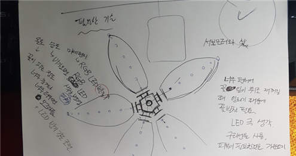

* 모바일에서는 읽기 힘들어요. PC에서 봐주세요! *
사물인터넷(IOT)을 활용한 기상관측 및 가시성이 우수한 기상정보 디스플레이 장치
요약
개요
날씨 및 미세먼지 정보를 가시성이 우수한 구조물을 통해 알려줌으로 바쁜 일상에서의 의복 선택과 마스크, 양산 등의 준비를 용이하게 해주는 디스플레이 장치이다.
온도, 습도, 미세먼지 센서와 인터넷상의 날씨 정보를 획득하고, 획득된 정보를 데이터 무선통신을 활용하여 디스플레이 하는 것으로 구성된다.
본 프로젝트에서 사용되고 학습한 중요한 기술은 마이크로 컨트롤러 제어(ESP8266, Arduino), 센서 데이터 검출(온도, 습도, 먼지, 조도), 와이파이 데이터 송수신, 서보모터 구동, LED 및 LCD 디스플레이 제어, 데이터 서버 저장 및 필요한 데이터 추출(파싱) 등이 있다.
개발 기간
2019.04 ~ 2019.06
개발 인원
김원식, 팀원 (총 2명)
최종 결과물
-
기상정보 획득 및 데이터 송신장치 : 온도, 습도, 미세먼지, 조도 측정값을 서버에 무선송신
-
기상정보 저장장치 : 서버로 송신된 기상정보의 저장
-
기상정보 수신 및 디스플레이 장치 : 꽃 식물을 조형물로 제작하여 서버로부터 무선 수신된 날씨 정보의 표현
- 온도 : 꽃잎의 초록색 LED 밝기로 표현
- 습도 : 암술의 파란색 LED 밝기로 표현
- 미세먼지 : 암술의 붉은색 LED 밝기로 표현
- 조도 : 시간대를 나타내는 것으로 꽃이 피고 지는 동작으로 표현
-
주요 사진
( 기상정보 수신 및 디스플레이 장치 : LED 및 LCD 디스플레이를 통한 날씨정보 표현 )
( 기상정보 획득 및 데이터 송신장치 : 센서 측정값을 ESP8266 와이파이 모듈로 데이터 전송 )
( 기상정보 데이터 저장 내용 웹 확인 : 측정값의 실시간 변경 확인 )
시사점
-
사물인터넷 제품개발의 용이함 : 최근 저렴하고 다양한 센서 및 마이크로 컨트롤러(MCU)의 판매뿐만 아니라 5G 통신 등으로 사물인터넷 제품이 급증하는 추세이다. ICT와 기계, 화학 등의 융합 및 다양한 센서 융합을 활용하면 창의적인 제품개발이 가능할 것으로 생각된다.
-
기술정보 공유의 중요성 : 두 명이 분야별로 나누어 공동개발을 하게 되어, 본인이 직접 수행 하지 않은 부분은 구체적인 기술내용을 파악하기 어려웠다. 공동개발의 경우에는 구성원 간에 기술협의 시간을 조금 더 많이 가지며 다른 사람의 개발내용에 대해서도 관심을 기울인다면 학습범위를 더 넓게 할 수 있고, 또한 더 좋은 결과물이 나오지 않았을까 생각된다.
-
기록 정리의 중요성 : 프로젝트 종료 이후, 정리된 기록물의 부실과 기억의 한계에 의해 구체적인 내용을 언급할 때 아쉬움이 크다. 기록, 정리하면서 체계적으로 기술 습득이 이루어 지는 것으로 프로젝트 진행 시 기록하는 습관을 갖는 것이 중요하다.
개발과정 기록 더보기
개발과정 및 시행착오
- 나 김원식의 개발 과정이기 때문에 웹 개발을 했던 팀원은 어떤 식으로 개발을 진행했는지 정확하게 알 수 없고, 기록하지 않았다.
- 과제 수행 중 변동이 된 사항이 너무나도 많기 때문에 계획 수립, 및 초기 개발 과정은 최종 결과물과 차이가 있다.
- 아래 내용은 당시 개인적으로 메모했던 것을 최대한 보존하며 일정 시간이 지난 뒤 정리해놓은 글이기 때문에 시제사용에 문제가 존재할 수 밖에 없다.
- 당시 메모했던 것도 개발 중간중간 자주 메모한 것이 아니기 때문에 개발 순서의 앞뒤는 살짝 다를 수 있다.
4월 초
계획 수립
아두이노를 사용하여 기상 정보를 받아온다. 와이파이를 사용하여 기상청 사이트에서 날씨를 받아오거나, 별도의 센서가 달린 또 다른 아두이노에 블루투스를 연결하여 받아온다.
이후 받아온 데이터를 이용하여 사람들이 보기 좋게 기계 조형물로 나타낸다.
진행하면서 수월하게 진행이 된다면 다양한 기능들을 더 추가할 예정
ex) 핸드폰 어플리케이션과 연동하여 숫자로 표현된 정확한 수치를 확인하기,
측정된 데이터를 통해 자동으로 창문을 여닫아 환기를 시켜주는 기능 등
데이터는 와이파이를 통해 직접 구축한 서버에 저장하고 가져온다.
날씨 데이터를 받아 이것을 표현해주는 조형물은 꽃의 형태다.
온도에 따라 꽃이 피는 정도를 조절하는 것을 서보모터를 통해 구현한다.
너무 춥거나, 너무 더우면 꽃이 오그라든다.
LED를 사용하여 미세먼지와 습도(비 오는 날) 정도에 따라 색상을 변경 시켜 식물을 만들어 날씨에 따라 외출하기 좋은 정도를 표현해준다. 미세먼지는 빨간색, 습도는 파란색 빛의 강도 조절을 통해 표현한다.
조형물이기 때문에 심미성도 필요하다. 따라서 LED는 보드에 끼우는 전구형 LED를 사용하지 않고 SMD LED를 직접 납땜하고, 꽃의 기본적인 틀과 외관은 3D 펜을 사용한다.
최종적인 목표는 최대한 실제 시장에서 파는 수준의 제품처럼 성능도 좋고, 마감을 깔끔하게 만든다.
진행을 하는 동안 어쩌다 보니 내가 하드웨어 쪽을 담당하게 되었다.
기본적으로 아두이노와 관련된 수업을 들어본 적도 없으며, 각종 전기 전자와 같은 하드웨어와 관련된 지식이 거의 없기 때문에 최대한 이른 시간 안에 익히도록 스스로 공부해야 한다.
내가 해야 할 아두이노는 유형의 과제물이기 때문에 물품을 구매한 이후에 프로젝트를 진행할 수밖에 없었다. 그래서 그전에는 미리 개발을 위한 준비를 했다.
계획을 변경했다. 변경된 사항 중 계획하지 않았던 것으로 I2C 제어로 사용하는 LCD를 조형물 쪽에 달아 더 정확한 측정값을 사용자가 볼 수 있도록 하는 것이 있었으며, 산책하기 최적의 상태가 되었을 경우 부저 모듈을 통해 멜로디를 출력하도록 결정했다.
물품구매를 하기 위해 인터넷을 많이 활용하고 검색했다.
초기에 계획이 되어있었거나 전에 생각했던 물품들의 변동이 많이 있었다.
각종 문제들 발생
하나의 LED를 제어하기 위해서는 하나의 아두이노의 PWM 핀이 필요했으며, 이 핀 하나에서 나오는 전류는 40mA를 초과하지 않아야 했다.
그 때문에 초기에 계획했던 LED 표현을 작게 축소하여 바꿨다. 기존에 5개의 LED를 통해 하나의 측정값을 꽃잎에 출력하려던 것을 1.9V 5mA의 SMD LED 3개를 직렬로 연결하여 출력하도록 변경했다. ( 직렬로 연결하지 않으면 보드에 있는 핀이 남아나지를 않는다. )
각 6개의 꽃잎에 출력되는 LED는 모두 동일하게 작동하기 때문에 하나의 핀에 직렬로 연결하려고 했으나, 하나의 핀에서 나오는 전압은 5V밖에 되지 않아 6개의 PWM 핀이 필요했다.
LED의 출력만 사용하려면 아두이노 우노보드를 사용해도 되지만, 이 출력에 나타내는 곳에는 서보모터의 데이터 출력 핀, 빨간색 LED 사용할 핀, 파란색 LED 사용할 핀이 필요했다. (별도로 출력되는 곳인 조형물 쪽에는 LCD에 필요한 아날로그 핀 2개와 멜로디IC 부저 디지털 핀 PWM 아니어도 가능이 있었다.)
아두이노 우노보드에는 6개의 PWM 핀밖에 없다는 것을 알고 출력에서 사용하는 아두이노 보드는 아두이노 메가 보드로 사용하는 것으로 결정했다.
최종 구매를 결정하기까지 많은 시간을 사용했다.
학창 시절에 배우긴 했겠지만, 전압, 전류, 저항의 개념도 확실하지 않아서 계산법도 새로 익히고 공부를 다시 하게 되었다.
같은 크기의 LED여도 사용전압이 다르기도 하며, 소모하는 전류도 같은 회사에서 나온 것이라도 색깔이 다르면 다르기도 했다.
각 부품의 데이터시트를 통해 확인하는 LED의 크기부터 밝기, 전압, 전류, 어느 정도 두께의 선에 납뗌이 가능한지, 테프론선이라는 것이 피복 속 구리 겉에 별도의 비전도체가 발라져 있는지, 각각 사용되는 모듈의 PWM 핀의 사용 유무, 몇 개의 핀을 사용하는지, 사용전압, 대기하는 동안 사용되는 전류의 양, 보드의 총 전압, 전류 등 수없이 많이 고려해야 할 사항들이 존재했다.
각각의 부품들의 가격 비교해가며 배송비를 아끼기 위해서라도 최대한 한 번에 사려고 노력했다.
구매 목록
1차구매
| 번호 | 품명 | 수량 | 용도 |
|---|---|---|---|
| 1 | 아두이노 SG-90 서보모터 Servo motor, SG90 | 1 | 조형물 중 꽃 조형물의 꽃잎의 움직임을 제어하기 위함 |
| 2 | ABS / PLA 1.75mm 3D프린터 필라멘트 20여가지 색상 형광 야광 프린트 회색 | 1 | 3D펜을 사용하여 조형물들의 기본적인 틀을 만들기 위한 재료 |
| 3 |
[DEV-11287] Arduino Wi-Fi Shield |
1 |
와이파이 통신을 위해 |
| 4 |
[A000066] Arduino Uno (R3) |
1 |
아두이노 보드 |
* 3번, 4번은 같은 구매처, 아두이노 와이파이쉴드의 재고가 없어서 둘 다 환불조치 했다.
2차구매
| 번호 | 품명 | 수량 | 용도 |
|---|---|---|---|
| 1 | 1/4W 5% Axial Resistor 101J (100Ω) | 10 | 5050사이즈 칩형 LED의 전압(3.2V)과 아두이노에서의 전압(5V) 차이, 외부전원(6V)과 LCD(5V) 사이의 전압 차이 때문에 사용하는 저항 |
| 2 | [LS-SP150YG34-5] 칩LED3216 녹색 | 20 | 측정한 온도를 눈으로 보기 쉽게 출력하기 위해 사용하는 칩형 LED |
| 3 | 6F22(9V,FC-1)Be | 1 | 아두이노에 전력 공급을 위해 사용하는 9V 건전지 |
| 4 | AA배터리 건전지홀더 전원타입[4개입] | 1 | 서보모터 및 LCD에 외부전원을 사용하기 위해 쓰는 AA배터리 |
| 5 | LS-SF5050-UB3-C | 1 | 5050 사이즈 파란색 칩형 LED (습도 출력) |
| 6 | LS-SF5050-UE3-C | 1 | 5050 사이즈 빨간색 칩형 LED (미세먼지 출력) |
| 7 | 테프론선 0.5T (흰색) 1M | 2 | 조형물에 부착할 SMD LED 에 전원 공급 |
| 8 | 테스트[CH254]소켓 점퍼 케이블 40P (칼라) (F/F) | 1 | 점퍼케이블 |
| 9 | 실습납 (WK-1.0-50) | 1 | SMD LED와 테프론선 사이를 납뗌하기 위한 납 |
| 10 | 테스트[CH254]소켓 점퍼 케이블 40P (칼라) (M/F) | 1 | 점퍼케이블 |
| 11 | 테스트[CH254]소켓 점퍼 케이블 40P (칼라) (M/M) | 1 | 점퍼케이블 |
| 12 | Arduino Uno (R3) 호환보드 [SZH-EK002] | 1 | 센서쪽의 아두이노 우노보드 |
| 13 | Arduino Mega 2560 (R3) 호환보드 [SZH-EK028] | 1 | 조형물쪽의 아두이노 메가보드 (LED 제어를 위해 우노보드보다 DIGITAL PWM 이 6개 이상 필요) |
| 14 | ESP8266 시리얼 와이파이 모듈 ESP-01 (DIP) [SZH-EK051] | 2 | 아두이노 보드사이 와이파이 통신을 위한 모듈 |
| 15 | Snap - 단자 9V DC플러그 타입 [SZH-BH010] | 1 | 9V 건전지를 조형물 아두이노 보드에 전원을 공급해주기 위함 |
| 16 | 아두이노 부저 모듈 Low + Passive [SZH-SDBJ-007] | 1 | 외출 최적의 상태가 되었을 경우 부저를 통해 멜로디 출력 |
| 17 | GP2Y1014AU0F 먼지 센서 [SZH-SSBH-100] | 1 | 센서쪽 아두이노에서 사용 할 먼지센서 |
| 18 | 아두이노 I2C 1602 LCD 모듈 [SZH-EK101] | 1 | 조형물쪽 센서에서 측정된 값을 정확한 숫자로 표현 해주는 LCD 모듈 |
| 19 | 브레드보드 400핀 Half Size Breadboard [SZH-BBAD-005] | 2 | 각종 센서의 전원과 출력물, 그리고 아두이노 사이를 이어줄 브레드보드 |
| 20 | DHT11 미니 온습도 센서모듈 [SZH-EK077] | 1 | 조형물쪽 아두이노에 사용할 온도와 습도를 측정해주는 센서 |
| 21 | DG127-5.0 (3핀) | 2 | 미세먼지 센서의 선과 브레드보드 사이를 이어주기 위한 핀 |
처음에 보드의 통신을 위해 와이파이쉴드를 사려고 구매를 진행하도록 했지만, 품절이 되어 주문이 보류되었다. 결국, 와이파이쉴드를 파는 사이트를 찾다가 없어 결국에는 그 사이트에서의 주문을 취소했다.
취소하고 아두이노 자체에 와이파이 통신이 가능한 Wemos D1보드를 구매하려 했다. 하지만 이 보드의 아날로그 신호 핀이 한 개밖에 없다는 사실을 알고 사용할 수 없다는 것을 알게 되었다. 최종적으로 ESP-8266-01이라는 와이파이 모듈을 사용하기로 했다. 가장 복잡하고 어렵다고 하는데 방법이 없었다. 다른 사이트에서 다시 구매신청을 하기로 했다.
이러한 과정을 통해 4월 중순이 넘게 돼서야 물품을 받아 개발을 진행할 수 있었다.
3D펜에 사용하기 위해 주문한 ABS플라스틱만 배송이 도착하여 일단 도착한 재료로 조형물의 형태를 만들었다.
꽃 모양의 조형물을 만들기 위해 도면을 그리고 조형물이 어떤 정보를 나타낼지 결정했다. 이후 배송이 온 ABS 플라스틱과 3D펜을 사용하여 조형물의 기본적인 형태를 만들었다.
도면에서는 5개의 꽃잎으로 만들려고 했지만, 각 꽃잎이 포개져서 접힐 때 6개의 꽃잎으로 만들면 더 자연스럽다는 것을 알게 되었고 실제로 만들 때는 6개의 꽃잎으로 만들었다. 6개로 만들면 최종적으로 한 부분은 겹쳐서 포개지지 않는다.

( 메모와 대략적인 설계도면 )
( 3D펜을 사용하여 꽃의 형태를 만들던 중간 과정 )
4월 말
배송이 온 아두이노 보드들과 각각의 센서와 모듈이 정상적으로 작동을 하는지 확인을 했다.
기본적인 아두이노 설치부터 보드와의 연결 그리고 각종 예제와, LED의 작동원리, 밝기조절이 어떤 식으로 되는지 이해하고 각각의 모듈의 사용법들을 익혀나갔다.
이때 와이파이 통신을 위해 사용된 esp8266-01 모듈을 동작시키기 위해 모듈의 펌웨어를 업데이트시켰다.
3.3v를 사용하는 모듈이지만, 펌웨어를 업데이트시키는데 사용되는 아두이노의 Tx, Rx의 출력이 고정적으로 5v라서 혹시 고장이 날까 봐 걱정을 많이 했다. 각종 블로그나 해외사이트들의 업데이트 후기를 믿고 보고 따라서 했다.
이후 3.3v에서 동작할 수 있게끔 저항을 사용하여 브레드보드에 연결시켜 와이파이 모듈의 동작을 확인했다.
esp8266 와이파이 모듈을 동작시키기 위한 라이브러리를 깃허브에서 다운받고 라이브러리를 제공한 문서에서 사용이 가능한 함수들을 찾아 이를 활용하여 집주변에 와이파이를 잡아보았다.
아두이노 우노보드와 아두이노 메가보드의 esp8266 모듈의 사용 방법이 다른 것을 확인했다.
( esp 8266 모듈 펌웨어 업데이트를한 후 주변 와이파이가 잡히는 동작 확인 )
아두이노보드가 와이파이 모듈과 시리얼통신으로 데이터를 주고받을 수 있는 간단한 샘플 코드를 사용했다.
서보모터 라이브러리를 사용하여 여러 가지 동작을 익히고 배우며, 어떤 식으로 사용해야 꽃이 자연스럽게 동작할까 고민을 많이 했다.
조형물은 대부분의 형태를 완성하고 서보모터를 달아 서보모터가 움직이면 꽃도 피거나 지도록 형태를 만들었다. 이후 실제 동작을 확인하기 위해 시리얼모니터를 통해 전달받은 값을 조형물의 서보모터에 전송해줘서 움직임을 확인했다.
거친 표면 때문에 잘 움직여지지 않았던 조형물을 사포로 다듬고, 열을 가해 변형시킨 뒤 자연스럽게 움직이는 모습을 확인하고 영상으로 담았다.

( 시리얼 모니터를 통해 꽃의 움직임을 확인함, 신나서 페이스북에도 올림 )
( 서보모터의 구동부 사진 )
서보모터가 180도의 회전이 가능하다보니 실수로 큰 회전값을 입력받았을 경우에 제품이 망가질 것을 우려하여 제한을 두게 만들었다.
#include<Servo.h> //서보모터 라이브러리
Servo servomotor; //Servo 클래스로 servo객체 생성
int input = 0; // 각도를 조절할 변수 value
int flowerspeed = 20; //꽃 부드럽게 하려고 for문넣은거에 delay 넣었는데 거기 넣을 값
int state=90; // 서보모터 각도 상태
int i;
int servo_min=90;
int servo_max=123;
라이브러리 추가 및 변수 선언
void setup() {
servomotor.attach(12); //맴버함수인 attach : 핀 설정
}
setup()
void loop() {
if(input>=servo_min && input<=servo_max) // servo min 부터 servo max 까지만 구동되게 {
Serial.print("go to : ");
Serial.println(input);
Serial.println("Let's go!");
if (state < input) {
for (i=state; i<=input-1; i++) {
state++;
servomotor.write(state);
Serial.print("angle : ");
Serial.println(state);
delay(flowerspeed);
}
}
if (state > input) {
for (i=state; i>=input+1; i--) {
state--;
servomotor.write(state);
Serial.print("angle : ");
Serial.println(state);
delay(flowerspeed);
}
}
if(input==1) {
Serial.println("감소");
if(state>servo_min) {
state--;
servomotor.write(state);
Serial.print("angle : ");
Serial.println(state);
}
}
if(input==2) {
Serial.println("증가");
if(state<servo_max) {
state++;
servomotor.write(state);
Serial.print("angle : ");
Serial.println(state);
}
}
}
loop()
4월 끝자락에는 시험 기간이라 프로젝트의 진행을 원활하게 하지 못했다. 시험이 끝난 지금부터는 더 빠른 진행이 가능할 것 같다.
5월 초
센서들의 사용법을 하나하나 익히고, 각각의 필요한 라이브러리들을 추가하고 시리얼모니터를 통해 동작을 확인했다.
작동을 확인한 센서들을 하나의 아두이노 보드에 잘 연결하여 모두 동작하도록 소스코드를 재작성 후 동작을 확인했다.
( 작동이 확인된 센서들을 하나의 아두이노에 모두 연결 )
( 모두 연결한 센서들의 동작 확인 )
#include <SoftwareSerial.h> // esp8266 사용을 위해
#include <DHT.h> //온습도센서 사용을 위해 설치한 DHT 라이브러리 불러오기
#define DHTPIN A1
#define DHTTYPE DHT11
DHT dht(DHTPIN, DHTTYPE);
#define BT_RXD 2 // esp rx
#define BT_TXD 3 // esp tx
SoftwareSerial ESP_wifi(BT_RXD, BT_TXD);
int dust_sensor = A0; // 미세먼지 핀 번호
float dust_value = 0; // 센서에서 입력 받은 미세먼지 값
float dustDensityug=0; // ug/m^3 값을 계산
int sensor_led = 12; // 미세먼지 센서 안에 있는 적외선 led 핀 번호
int sampling = 280; // 적외선 led를 키고, 센서 값을 읽어 들여 미세먼지를 측정하는 샘플링 시간
int waiting = 40;
float stop_time = 9680; // 센서를 구동하지 않는 시간
void setup() {
Serial.begin(9600); // 시리얼 모니터 시작, 속도는 9600
ESP_wifi.begin(9600);
ESP_wifi.setTimeout(5000);
delay(1000);
pinMode(sensor_led,OUTPUT); // 미세먼지 적외선 led를 출력으로 설정
}
void loop() {
if (Serial.available()){
ESP_wifi.write(Serial.read());
}
if (ESP_wifi.available()) {
Serial.write(ESP_wifi.read());
}
digitalWrite(sensor_led, LOW); // 미세먼지센서안에 뭐 측정하는 LED가 들어가는거 같은데 그거 켜주는거 LED 켜기
delayMicroseconds(sampling); // 샘플링해주는 시간? 미세먼지 센서 사용하려면 필요
dust_value = analogRead(dust_sensor); // 센서 값 읽어오기
delayMicroseconds(waiting); // 너무 많은 데이터 입력을 피해주기 위해 잠시 멈춰주는 시간.
digitalWrite(sensor_led, HIGH); // LED 끄기
delayMicroseconds(stop_time); // LED 끄고 대기
dustDensityug = (0.17 * (dust_value * (5.0 / 1024)) - 0.1) * 1000; // 미세먼지 값 계산
int h = dht.readHumidity();
int t = dht.readTemperature();
/*시리얼 모니터 확인용 시리얼 모니터 확인용 시리얼 모니터 확인용*/
Serial.print("먼지값 [ug/m3]: "); // 시리얼 모니터에 미세먼지 값 출력
Serial.print(dustDensityug);
Serial.print("\n");
Serial.print("습도 :");
Serial.println(h); // 습도값 출력
Serial.print("\n");
Serial.print("온도 :");
Serial.println(t); // 온도값 출력
Serial.print("\n");
delay(1000);
/*시리얼 모니터 확인용 시리얼 모니터 확인용 시리얼 모니터 확인용*/
}
* 와이파이모듈의 라이브러리와 그것이 시리얼 통신에 필요한 함수들도 함께 들어있다.
하지만, 이 상태로 시리얼 모니터를 통해 데이터 전송 테스트를 해보면 잘 되지가 않는다.
아마도 loop 속에 delay함수 때문에 모듈이 일정시간 대기동안 데이터 전송이 오지 않으면 더이상 중간에 받고있던 데이터를
기다리지 않는 것 같다. 그리고 시리얼 모니터를 통해 확인하는 기상정보도 테스트가 끝나면 간섭이 일어나지 않게 지워야겠다.
LED가 켜지지 않은 문제 발생
조형물은 배송 온 LED를 납땜하는 작업을 하고 작동이 되는지 확인을 했다. 그런데 작동하지 않았다.
처음 생각에는 1.9V 5mA의 칩형 LED 3개를 직렬로 연결하여 아두이노에서 5V를 공급하게 되면 조금이지만 약하게라도 켜질 줄 알았다. ( 처음 아두이노 우노보드가 배송이 왔을 때 전구 모양 LED를 5V를 공급하기도 하고, 3.3V를 공급하기도 했을 때 둘 다 작동이 되었으며, 문제가 있던 것은 오로지 밝기차이밖에 없었던 경험 때문에.. )
하지만 구매한 LED가 전압이 조금이라도 부족하면 켜지지 않았다. 6V 외부전압을 사용했을 때는 작동이 잘되었지만, 5V를 사용하면 켜지지도 않았다. 그래서 꽃잎마다 2개의 LED를 사용하여 온도를 표현하는 방식으로 프로젝트 계획을 바꿨다.
이후 실제로 2개의 LED를 직렬로 납땜한 것을 조형물에 부착하는 작업을 했다. 작업하던 도중 테프론선이 부족하여 추가로 구매할 것을 계획했다. 주문한 1M의 테프론선으로 꽃잎 3개까지밖에 만들지 못했다.
( 직렬로 납뗌한 LED 3개에 6V 전압으로 동작 확인 )
( 3개의 LED가 아두이노 5V에서 작동하지 않는 것을 확인하고 2개로 끊은 다음 조형물에 부착 2개의 LED일 때 아두이노에서 뽑은 5V에서 동작하는 것을 확인 )
향후 추진계획
아직 진행하지 못한 와이파이 통신을 통해 서버에 접속하여 데이터를 주고받는 동작을 완성할 것이다.
3개의 LED를 직렬로 연결했을 경우 켜지지 않는 것을 확인한 이후 6개의 핀을 통해 각각 2개씩의 LED를 켜는 방법을 사용하려고 했다. 하지만 전압이 부족하여 켜지지 않았던 것을 확인해봤으니 전류에는 문제가 없다고 판단하여 2개의 직렬로 묶여있는 LED 다발 2개를 서로 병렬로 연결하여 하나의 핀에서 처리하도록 결정했다. 그리고 구매했던 LED의 데이터시트를 확인해보니 1.9V에서 최대 2.3V라고 쓰여 있는 것을 확인했다.
5V의 아두이노 전압을 사용하면 LED에 무리가 갈 수 있으니 추가로 저항을 구매해야겠다는 생각도 했다.
인터넷에서 74hc595와 uln2803 칩을 사용하여 외부전원을 통해 led를 제어하는 방법을 인터넷에서 찾았다. 프로젝트가 완료된 이후 시간이 남거나 어쩔 수 없이 필요한 경우 이 방법을 사용하기로 했다. ( 아두이노 전체에 사용되는 전류가 초과하는 경우가 생길 있기 때문 )
( 74hc595와 uln2803를 사용하여 외부전원을 사용하여 LED를 제어하는 예시 인터넷을 참고했다. )
1m의 테프론선을 사용하면 프로젝트를 진행하는데 충분할 줄 알았으나 직접 해보니 필요한 양보다 훨씬 부족하다는 것을 알았다. 조도센서와 실수로 구매하지 못한 AA건전지를 주문하면서 테프론선을 추가로 구매하기로 했다.
완제품을 시연할 때 사용하는 센서들이 빠르게 확인이 불가능하다는 사실을 알게 되었다. 눈으로 빠르게 확인이 불가능한 온도 습도 미세먼지센서 대신 조도센서를 추가할 것이다. 기존에 온도에 의해 오므라들고 피는 꽃잎을 조도에 의해 오그라들고 피도록 할 것이다. 조도센서를 추가구매 하면서 사지 못한 AA사이즈 건전지와 추가로 구매해야 할 테프론선 그리고 별도의 아이디어를 모아 새로운 물품들을 구매해서 프로젝트를 더 알차게 구성할 것이다.
3차구매
| 번호 | 품명 | 수량 | 용도 |
|---|---|---|---|
| 1 | 1/4W 5% Axial Resistor 101J (100Ω) | 10 | 직렬로 2개 연결된 LED에 사용할 저항 |
| 2 | LR6-2P(AA 1.5V)Be | 2 | AA사이즈 1.5V 건전지 4개 (외부전원에 사용) |
| 3 | 테프론선 0.3㎟ (검정) 1M | 8 | LED 전력공급 |
| 4 | 테프론선 0.5T (흰색) 1M | 8 | LED 전력공급 |
| 5 | 아두이노 CdS 광/조도 센서 모듈 [SZH-SSBH-011] | 1 | 조도센서로 사용 |
5월 말
I2C lCD 모듈의 사용법을 익혔다.
Arduino IDE에 직접 타이핑해서 업로드를 하면 그 자체가 LCD 나타내는 기능을 확인했다.
( I2C LCD 모듈의 동작을 확인해 봤다. )
#include <Wire.h> // i2C 통신을 위한 라이브러리
#include <LiquidCrystal_I2C.h> // LCD 1602 I2C용 라이브러리
LiquidCrystal_I2C lcd(0x27,16,2); // 접근주소: 0x3F or 0x27
void setup()
{
lcd.init(); // LCD 초기화
lcd.backlight(); // 백라이트 켜기
lcd.setCursor(0,0); // 1번째, 1라인
char a[11] = "Yonsei";
lcd.print(a);
lcd.setCursor(0,1); // 1번째, 2라인
lcd.print("Computer");
}
( 부저의 동작도 확인을 했다. )
int speakerPin = 5; // 정수형 변수 speakerPin를 선언하고 5를 대입
int length = 51; // 노래의 총 길이 설정
/* 크리스마스 캐롤 예제 가져다 써본다. */
char notes[] = "eeeeeeegcde fffffeeeeddedgeeeeeeegcde fffffeeeggfdc"; // 음계 설정
int beats[] = { 1, 1, 2, 1, 1, 2, 1, 1, 1, 1, 4,
1, 1, 1, 1, 1, 1, 1, 1, 1, 1, 1, 1, 1, 2, 2,
1, 1, 2, 1, 1, 2, 1, 1, 1, 1, 4,
1, 1, 1, 1, 1, 1, 1, 1, 1, 1, 1, 1, 1, 4
}; // 해당하는 음이 울리는 길이 설정
int tempo = 300; // 연주속도
void playTone(int tone, int duration)
{
for (long i = 0; i < duration * 1000L; i += tone * 2)
{
digitalWrite(speakerPin, HIGH);
delayMicroseconds(tone);
digitalWrite(speakerPin, LOW);
delayMicroseconds(tone);
}
}
void playNote(char note, int duration)
{
char names[] = { 'c', 'd', 'e', 'f', 'g', 'a', 'b', 'C' }; //음계 함수 설정
int tones[] = { 1915, 1700, 1519, 1432, 1275, 1136, 1014, 956 }; // 음계 톤 설정
for (int i = 0; i < 8; i++)
{
if (names[i] == note)
{
playTone(tones[i], duration);
}
}
}
void setup(){
pinMode(speakerPin, OUTPUT);
}
void loop()
{
for (int i = 0; i < length; i++)
{
if (notes[i] == ' ')
{
delay(beats[i] * tempo); // rest
}
else
{
playNote(notes[i], beats[i] * tempo);
}
delay(tempo / 10);
}
delay(500);
}
기존에 부저는 외출하기 최적의 상태가 되었을 경우 멜로디가 나오도록 하려고 했다.
하지만, 서보모터가 작동을 하는 동안 (가만히 있는 경우에도 원래의 상태로 돌아가려는 성질 때문에 항상 전류가 흐르며 미세하게 진동하며 작동함) 잡음이 계속해서 나왔다. 그래서 이 부저의 사용은 보류하도록 결정했다.
인터넷과 책을 찾아보니 서보모터의 servo 라이브러리와 부저의 tone( ) 함수가 같은 타이머를 사용해서 서로 간섭이 생긴다고 찾았다. ( 정확한 내용은 잘 모르겠다. 각 핀번호에 사용되는 신호를 타이머에서 빼서 써서 간섭이 생긴다고 찾아 핀번호를 바꿔보기도 했지만, 부저의 잡음은 계속해서 들렸다. )
배송온 조도센서를 사용해봤다.
int bright=0; // 조도센서에서 입력받은 값 넣을 변수
void loop(){
bright= analogRead(A5); //아날로그 5번핀에 꼽은 조도센서에서 나온 값 bright에 넣고
Serial.print("조도 :");
Serial.println(bright); //bright 출력
Serial.print("\n");
}
( 추가 )

( 5V의 한쪽 꽃잎에서 동작하는 초록색 꽃잎 LED의 동작을 확인한 이후 나머지 꽃잎 5개와, 암술부분에 LED를 넣었다. )
( 조형물이 서있을 수 있도록 아래 부분의 뼈대를 보강하고, LED의 동작을 확인했다. 모든 빛의 값을 최대로 줬을 때 모습 )
6월 초
본격적으로 Arduino ide를 켜서 모듈을 테스트하는 것이 아닌 프로젝트 자체를 코딩하는 시간이 길어지게 되었다.
시리얼 모니터를 통해 내가 지정한 String을 전송해주면, 그것을 파싱하여 각각의 기상정보에 맞는 LED들의 빛의 강도를 설정하고,
서보모터의 작동도 바꿔 꽃이 피고지게 만들었다.
센서를 통해 입력받을 값이 너무나도 낮더라도 일정수준의 LED 빛이 켜지게 했다.
빛부터 꽃의 개화정도 등 모든 것들을 외출하기 최고 좋은 온도를 인터넷에서 찾아 기준삼아 내 상식선상에서 적당하게 세기를 조절했다.
char Buffer[50];
int TP,HU,DU,BR; // 온도,습도,먼지,밝기
int TP_2; //받은 온도값을 계산을 통해 적당한 출력으로 led에 넣어주기 위해 변수하나 지정함
int HU_2; // 같은이유로 만든 습도 투
int DU_2;
int BR_2;
void setup() {
Serial.println("참고사항 : 온도최적 19도/습도 100/미세먼지 531/밝기 1000\n\n" );
/* LED 다켜보자 */
pinMode(8, OUTPUT);
pinMode(9, OUTPUT);
pinMode(2, OUTPUT);
pinMode(3, OUTPUT);
pinMode(4, OUTPUT);
pinMode(5, OUTPUT);
pinMode(6, OUTPUT);
pinMode(7, OUTPUT);
analogWrite(8, 255); //빨강
analogWrite(9, 255); //파랑
analogWrite(2, 255); // analog write 0 ~ 255 온도 잘 맞춰서 밝기조절
analogWrite(3, 255);
analogWrite(4, 255);
analogWrite(5, 255);
analogWrite(6, 255);
analogWrite(7, 255);
/* LED 다켜보자 */
}
void loop() {
if (Serial.available()) { // Serial 모니터창에 값들어오면 실행ㄱ
sscanf(Buffer, "%d/%d/%d/%d", & TP, & HU, & DU, & BR); // 시리얼통신 입력순서 : 온도 습도 먼지 밝기
Serial.print("Temperature = ");
Serial.print(TP);
Serial.print("\tHumidity = ");
Serial.print(HU);
Serial.print("\tDust = ");
Serial.print(DU);
Serial.print("\tBright = ");
Serial.println(BR);
TP_2 = (255 - (25 * abs(TP - 19))); // 19도에서 멀어지면 tp_2 값 낮아지게 한다
if (18 < TP && TP < 20) { // 18~20도 최고밝기
TP_2 = 255;
}
if (TP_2 > 255 || TP_2 < 0) {
TP_2 = 5;
}
// Serial.print("\tTP_2 = ");
// Serial.println(TP_2);
HU_2 = (HU - 50) * 6;
if (HU < 50) {
HU_2 = 0;
}
if (HU_2 > 255) {
HU_2 = 255;
}
// Serial.print("\tHU_2 = ");
// Serial.println(HU_2);
// 먼지센서 평소 한 30정도에서 걍 레이저 막아버리면 531 정도에 가끔 -가 되기도함
DU_2 = DU / 2;
if (DU_2 < 0) {
DU_2 = 0;
}
if (DU_2 > 255) {
DU_2 = 255;
}
BR_2 = 90 + ((1000 - BR) / 30.3);
if (BR_2 > servo_max) {
BR_2 = servo_max;
}
if (BR_2 < servo_min) {
BR_2 = servo_min;
}
// Serial.print("\BR_2 = ");
// Serial.println(BR_2);
analogWrite(2, TP_2);
analogWrite(3, TP_2);
analogWrite(4, TP_2);
analogWrite(5, TP_2);
analogWrite(6, TP_2);
analogWrite(7, TP_2);
analogWrite(8, DU_2); // 먼지 빨강 led
analogWrite(9, HU_2); // 습도 파란 led
// servomotor.write(BR_2); //서보가 90도에서 123도까지만, 조도센서 보니까 0~1000 밝을때의 기준은 0
if (state < BR_2)
{
for (i = state; i <= BR_2 - 1; i ++)
{
state ++;
servomotor.write(state);
// Serial.print("angle : ");
// Serial.println(state);
delay(flowerspeed);
}
}
if (state > BR_2)
{
for (i = state; i >= BR_2 + 1; i --)
{
state --;
servomotor.write(state);
// Serial.print("angle : ");
// Serial.println(state);
delay(flowerspeed);
}
}
} // 시리얼모니터
}
( 중간 저장 코드가 없어서, I2C LCD모듈과, 와이파이 모듈과 함께 사용되었던 소스코드에서 필요한 부분만 뺴서 작성했다. )
기상정보를 입력받으면, 꽃 뿐만이 아니라 I2C LCD에도 사용자가 정확한 값을 보기 쉽도록 표시하는 기능을 넣는다.
void loop() {
if (Serial.available()) {
lcd.clear();
lcd.setCursor(0, 0);
lcd.print("TP:");
lcd.print(TP);
lcd.write(byte(1));
lcd.print("°C");
lcd.print(" HU:");
lcd.print(HU);
lcd.print("% ");
lcd.setCursor(0, 1);
lcd.print("DU:");
lcd.print(DU);
lcd.print("ug");
if (DU > 100) {
lcd.print(" BR:");
lcd.print(BR);
} else {
lcd.print(" BR:");
lcd.print(BR);
}
}
}
( °C의 °가 출력이 되지 않아 라이브러리를 수정할까 고민을 했지만, 직접 픽셀을 찍는 함수를 찾게되어 그냥 만들었다. setup에 lcd.createChar(1,celsius ); 도 추가. )
( 시리얼통신으로 입력받은 온도, 습도, 미세먼지, 밝기를 LCD에 출력한 모습 조형물의 각종 밝기와 꽃이 피는 정도도 시리얼통신으로 입력을 받으면 변화한다.)
온도, 습도, 조도, 미세먼지 센서가 각각 측정한 결과마다 어떤 숫자를 반환하는지 미리 시리얼통신으로 확인을 했었다. 때문에 거기에 맞춰 연산을 통해 어느 정도의 값을 나타내야겠다 생각을하고 그 값을 시리얼 통신을 통해 입력을 받았을 때 I2C LCD에 표시되도록 했다.
( 센서에서 직접 측정된 값을 입력을 받은 것은 아니지만.. )
각종 온도, 습도, 조도, 미세먼지를 시리얼 통신으로 내가 정한 String으로 입력받으면 이를 파싱하여 변수에 저장을 하게 되고, 이를 통해 조형물의 각기 다른 세 종류의 LED와 꽃이 피는 정도를 나타내주는 서보모터와 LCD에 표시되는 값까지 전부 다 확인을 하게 되었다.
이 상태에서 와이파이 모듈을 통해 데이터 전송을 해보지는 않았지만, 모든 모듈을 사용하고, LED가 최대 밝기로 켜진 상태에서 esp8266 라이브러리에 있는 테스트 함수를 사용을 해봤다. 우려했던 전류 부족은 일어나지 않았고 잘 동작하는 것을 확인했다.
이후 esp8266 모듈을 사용하여 센서의 측정값을 서버로 보내주고 이를 조형물이 받는 형식으로 만들려고 했다. 팀원이 만들어놓은 웹페이지에 TCP 프로토콜을 사용한 데이터 전송 하는 것을 시도해봤지만, 계속해서 실패를 했다.
그래도 많은 시간을 내서 인터넷을 찾아보고, 각종 예제들을 사용해서 이를 구현하고 싶었지만 잘 모르겠고, 이를 사용한 예제도 별로 없으며, 있는 예제들도 원하는 방식으로 할 수가 없었다.
YOUTUBE에 esp8266 모듈끼리 시리얼 통신을 하여 서로의 LED를 껏다켰다 하는 예제를 찾았다. 이것을 보고 센서와 조형물 끼리라도 통신을 하고 싶은 마음이 들었다. 영상을 올린 사람의 깃허브에 들어가 어떤 식으로 했는지 확인을 해봤다. 이후 그 예제를 이용하여 여러 가지 시도를 해봤지만 결국 이 모듈을 사용하여 통신을 하는 것은 만들지 못했다.
진행이 더는 되어가지 않아 마음은 답답해졌다. 블루투스 시리얼통신에 대한 예제들은 많아 블루투스를 사용해서 할까 생각하기도 했다.
6월 말
라이브러리의 함수사용이 되지 않는 그 오류 때문에 손을 놓고 있던 중 찾아보니 그 esp8266의 라이브러리들이 한두가지가 아닌 것을 확인하게 되었다. 아마도 개인들이 입맛대로 수정해서 깃허브에 올리는 바람에 그렇게 된 것 같았다.
와이파이 모듈 설정해놓은 모든 부분의 소스코드를 새로운 라이브러리에 맞게 다 뜯어고쳤다.
AT커맨드를 사용하여 데이터를 전송하는 함수가 작동되는 것을 확인했다.
센서의 와이파이 모듈을 통해 팀원이 만든 웹에 접속, TCP 요청, 센서에서 AT커맨드를 통해 String전송을 확인했다.
정확한 내용은 잘 모르지만, 팀원이 보내라는 String 형식대로 맞추어서 전송을 했더니 웹페이지에 표현되는 시각적 그래프가 변동이 되었다.
조형물 쪽에서도 팀원이 보내라는 형식의 get 함수를 사용한 String을 웹페이지에 전송했더니, 가장 마지막에 웹페이지가 전송받은 기상정보 데이터를 조형물이 수신받았다.
내 방구석에서만 실행되는 코드가 아니게 하기 위해 내 핸드폰 핫스팟으로 동작하도록 변경도 했다.
#include < SoftwareSerial.h >
#include <ESP8266.h>
#include <DHT.h> //온습도센서 사용을 위해 설치한 DHT 라이브러리 불러오기
#define SSID "당시 사용했던 핫스팟 와이파이 SSID"
#define PASS "당시 사용했던 핫스팟 와이파이 비밀번호"
#define DST_IP "당시 사용했던 팀원 웹페이지 IP주소"
SoftwareSerial esp8266Serial = SoftwareSerial(2, 3);
ESP8266 wifi = ESP8266(esp8266Serial);
#define BT_RXD 2 // esp rx
#define BT_TXD 3 // esp tx
SoftwareSerial ESP_wifi(BT_RXD, BT_TXD);
int dust_sensor = A0; // 미세먼지 핀 번호
float dust_value = 0; // 센서에서 입력 받은 미세먼지 값
float dustDensityug = 0; // ug/m^3 값을 계산
int sensor_led = 12; // 미세먼지 센서 안에 있는 적외선 led 핀 번호
int sampling = 280; // 적외선 led를 키고, 센서 값을 읽어 들여 미세먼지를 측정하는 샘플링 시간
int waiting = 40;
float stop_time = 9680; // 센서를 구동하지 않는 시간
int bright = 0; // 조도센서에서 입력받은 값 넣을 변수
void setup() {
Serial.begin(9600); // ESP8266
esp8266Serial.begin(9600);
wifi.begin();
wifi.setTimeout(5000);
pinMode(sensor_led, OUTPUT); // 미세먼지 적외선 led를 출력으로 설정
Serial.print("joinAP: ");
Serial.println(getStatus(wifi.joinAP(SSID, PASS)));
Serial.print("connect: ");
Serial.println(getStatus(wifi.connect(ESP8266_PROTOCOL_TCP, DST_IP, 64002)));
}
void loop() {
digitalWrite(sensor_led, LOW); // 미세먼지센서안에 뭐 측정하는 LED가 들어가는거 같은데 그거 켜주는거 LED 켜기
delayMicroseconds(sampling); // 샘플링해주는 시간? 미세먼지 센서 사용하려면 필요
dust_value = analogRead(dust_sensor); // 센서 값 읽어오기
delayMicroseconds(waiting); // 너무 많은 데이터 입력을 피해주기 위해 잠시 멈춰주는 시간.
digitalWrite(sensor_led, HIGH); // LED 끄기
delayMicroseconds(stop_time); // LED 끄고 대기
dustDensityug = (0.17 * (dust_value * (5.0 / 1024)) - 0.1) * 1000; // 미세먼지 값 계산
int h = dht.readHumidity();
int t = dht.readTemperature();
bright = analogRead(A5); // 아날로그 5번핀에 꼽은 조도센서에서 나온 값 bright에 넣고
String h2 = String(h);
String t2 = String(t);
String dustDensityug2 = String(dustDensityug);
String string1 = "a001," + t2 + ".00," + h2 + ".00," + dustDensityug2 + "," + bright;
wifi.send(string1);
Serial.print(string1);
Serial.print("\n send !!\n");
delay(3000);
}
String getStatus(bool status) {
if (status)
return "OK";
return "KO";
}
String getStatus(ESP8266CommandStatus status) {
switch (status) {
case ESP8266_COMMAND_INVALID:
return "INVALID";
break;
case ESP8266_COMMAND_TIMEOUT:
return "TIMEOUT";
break;
case ESP8266_COMMAND_OK:
return "OK";
break;
case ESP8266_COMMAND_NO_CHANGE:
return "NO CHANGE";
break;
case ESP8266_COMMAND_ERROR:
return "ERROR";
break;
case ESP8266_COMMAND_NO_LINK:
return "NO LINK";
break;
case ESP8266_COMMAND_TOO_LONG:
return "TOO LONG";
break;
case ESP8266_COMMAND_FAIL:
return "FAIL";
break;
default:
return "UNKNOWN COMMAND STATUS";
break;
}
}
( 위의 코드 추가, esp8266 새로운 라이브러리 + 이를 사용한 웹 접속, String 전송 )
조형물 쪽에도 같은 라이브러리를 사용하여 받아온 String을 파싱하여 각각의 기상정보 변수값을 받아온 값으로 바꾸는 형식으로 변경했다.
테스트로 3초마다 전송하던 기상정보를 최종적으로 센서는 1분당 한 번씩 측정된 값을 전송하도록 변경했고, 조형물도 1분에 한 번씩 String을 받아오도록 하였다.

결론적으로 라이브러리를 바꿔 사용하는 것으로 6월 내내 완료하지 못했던 와이파이 통신을 완료하게 되었다.
외관을 이쁘게 고치는 것, 부가기능을 추가하는 것이 남았다.
3D펜으로 부실하던 조형물의 하체 부분도 보강하고, LCD 화면도 사용자가 보기 편하게 고정시키려고도 생각했었다.
그러나 기말고사 시험 기간이 되었고😫, 미관상 별로일 뿐이지 결론적으로 기능구현은 다 하게 되어 프로젝트를 끝냈다.
기존에 계획에 작성해놓았던 기상청 날씨 API를 받아오는 것, 측정된 데이터를 통해 자동으로 창문을 열고 닫아 환기를 시켜주는 기능 등 이런 잡다한 것들은 하지 못했다.
개발 중간에 74hc595와 uln2803을 통해 외부전원을 사용하여 LED를 제어하려던 계획도 전류부족 문제 없이 작동이 되어서 하지 않았다.
나는 웹페이지를 담당했던 팀원이 어떤 식으로 웹페이지를 만들었는지는 정확하게는 모른다.
확실한 것은 웹서버를 구축하고, 오픈소스 시각화 도구인 Grafana를 사용하여 웹페이지를 구현했다.
회고
위에 기술한 것뿐만이 아니라, 중간중간 막히는 부분이 너무나도 많았다.
스스로의 능력을 모르고 너무 크게 계획을 잡았다.
기초지식 없이 시작하다 보니 계획도 많이 변경되었고,
프로젝트의 개발 시간보다 개인 공부 시간이 더 커져 버리게 되었다.
그래서 투자한 시간보다 결과물이 생각보다 만족스럽지 못했다.
공통분야를 힘을 합쳐 작업하지 않았기 때문에 협업툴을 사용할 기회도 없어서 아쉬웠다.
다음에 프로젝트를 진행하게 될 때는 사전에 준비단계를 더 철저하게 해야겠다고 느꼈다.
그래도 시간 가는 줄 모르고 수 번의 주말을 통째로 반납하는 열정까지 가지고 종일 검색하고 만지작거렸던 과거를 생각하시면 뿌듯하다.